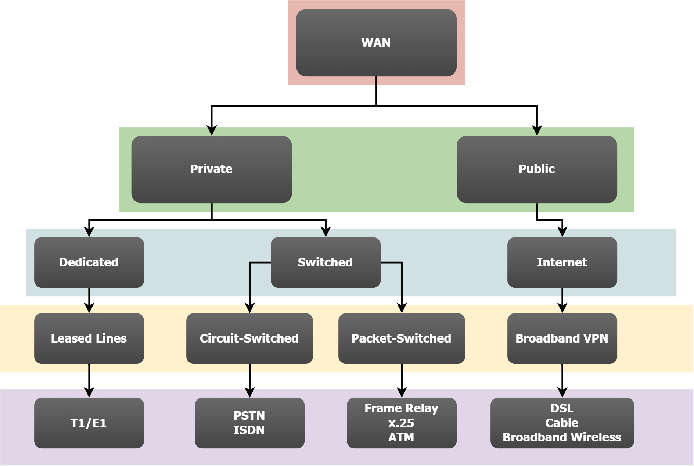

Configuring WAN Technologies
ccnp-routing
Notes on PPP over serial WAN links, PAP and CHAP authentication with a worked two router example, and the PPPoE discovery stages.

Point-to-Point Protocol (PPP)
- RFC 1661
- Ethernet vs PPP:
- Ethernet provides multiple access while PPP is point-to-point
- Ethernet: Broadcast - PPP: Party of two
- PPP operates on the data link layer (layer 2) but the data link layer has been split into two pieces:
- NCP: Network Control Protocol: NCP will make sure you can run different protocols over our PPP link like IP, IPv6 but also CDP (Cisco Discovery Protocol) and older protocols like IPX or AppleTalk.
- LCP: Link Control Protocol: LCP takes care of setting up the link. If you enable authentication for PPP it will take care of authentication. Once the link has been set up we use NCP.
- If the link is serial the default encapsulation on Cisco routers is HDLC. You have to change it by the
Router(config-if)#encapsulation pppcommand.
How PPP Operates
- Link dead: PPP is waiting for PHY to become active
- Link establishment (LCP): initiates connection between the 2 endpoints
- Authentication (optional): One of the end points authenticates the other end
- Network-layer protocol (NCP): See above
- Link termination: in case of an error like authentication problem
PPP Authentication
- It is a one-way authentication
- If you want to use authentication for PPP you have two options:
- Password Authentication Protocol (PAP):
- Password is sent in clear
- Challenge Handshake Authentication Protocol (CHAP):
- Password never sent in clear
Configuration
This is an example where R1 authenticates R2 using CHAP while R2 authenticates R1 using PAP
R1
R1(config)#username Router2 password class R1(config)#interface serial 1/1 R1(config-if)#encapsulation ppp R1(config-if)#ppp authentication chap R1(config-if)#ppp pap sent-username Router1 R1(config-if)#ip address 192.168.9.1 255.255.255.0
R2
R2(config)#username Router1 password cisco R2(config)#interface serial 1/1 R2(config-if)#encapsulation ppp R2(config-if)#ppp authentication pap R2(config-if)#ppp chap hostname Router2 R2(config-if)#ppp chap password class R2(config-if)#ip address 192.168.9.2 255.255.255.0
Verification
R1#show ppp interface serial 1/1 PPP Serial Context Info —---------------— Interface : Se1/1 PPP Serial Handle: 0x8000000A PPP Handle : 0x6400000A SSS Handle : 0xFD00000A AAA ID : 21 Access IE : 0x8A00000A SHDB Handle : 0x0 State : Up Last State : Binding Last Event : LocalTerm PPP Session Info —------------— Interface : Se1/1 PPP ID : 0x6400000A Phase : UP Stage : Local Termination Peer Name : Router2 Peer Address : 192.168.9.2 Control Protocols: LCP[Open] CHAP+ IPCP[Open] CDPCP[Open] Session ID : 10 AAA Unique ID : 21 SSS Manager ID : 0xFD00000A SIP ID : 0x8000000A PPP_IN_USE : 0x11 Se1/1 LCP: [Open] Our Negotiated Options Se1/1 LCP: AuthProto CHAP (0x0305C22305) Se1/1 LCP: MagicNumber 0x01102191 (0x050601102191) Peer's Negotiated Options Se1/1 LCP: AuthProto PAP (0x0304C023) Se1/1 LCP: MagicNumber 0x02103025 (0x050602103025) Se1/1 IPCP: [Open] Our Negotiated Options Se1/1 IPCP: Address 192.168.9.1 (0x0306C0A80901) Peer's Negotiated Options Se1/1 IPCP: Address 192.168.9.2 (0x0306C0A80902) Se1/1 CDPCP: [Open] Our Negotiated Options NONE Peer's Negotiated Options NONE
R2#show ppp interface serial 1/1 PPP Serial Context Info —---------------— Interface : Se1/1 PPP Serial Handle: 0x2C000009 PPP Handle : 0xE000009 SSS Handle : 0x79000009 AAA ID : 20 Access IE : 0x11000009 SHDB Handle : 0x0 State : Up Last State : Binding Last Event : LocalTerm PPP Session Info —------------— Interface : Se1/1 PPP ID : 0xE000009 Phase : UP Stage : Local Termination Peer Name : Router1 Peer Address : 192.168.9.1 Control Protocols: LCP[Open] PAP+ IPCP[Open] CDPCP[Open] Session ID : 9 AAA Unique ID : 20 SSS Manager ID : 0x79000009 SIP ID : 0x2C000009 PPP_IN_USE : 0x11 Se1/1 LCP: [Open] Our Negotiated Options Se1/1 LCP: AuthProto PAP (0x0304C023) Se1/1 LCP: MagicNumber 0x02103025 (0x050602103025) Peer's Negotiated Options Se1/1 LCP: AuthProto CHAP (0x0305C22305) Se1/1 LCP: MagicNumber 0x01102191 (0x050601102191) Se1/1 IPCP: [Open] Our Negotiated Options Se1/1 IPCP: Address 192.168.9.2 (0x0306C0A80902) Peer's Negotiated Options Se1/1 IPCP: Address 192.168.9.1 (0x0306C0A80901) Se1/1 CDPCP: [Open] Our Negotiated Options NONE Peer's Negotiated Options NONE
PPPoE
- RFC 2516
- PPP frames encapsulated inside Ethernet frames
- PPPoE Provides PPP features over Ethernet:
- Authentication
- Dynamic layer 3 addressing
- PPPoE uses a client-server relationship
- PPPoE Stages:
- Discovery:
- PPPoE client sends an Ethernet broadcast called Active Discovery Initiation (PADI)
- PPPoE server responds with Active Discovery Offer (PADO)
- The client sends a unicast Active Discovery Request (PADR) asking the server to start a PPPoE session
- Server sends an Active Discovery Session Confirmation (PADS) and then the PPPoE session is established
- PPP Session
- PPP frames are encapsulated in unicast Ethernet frames
- PPP authentication happens after the PPPoE discovery stage
- Discovery: